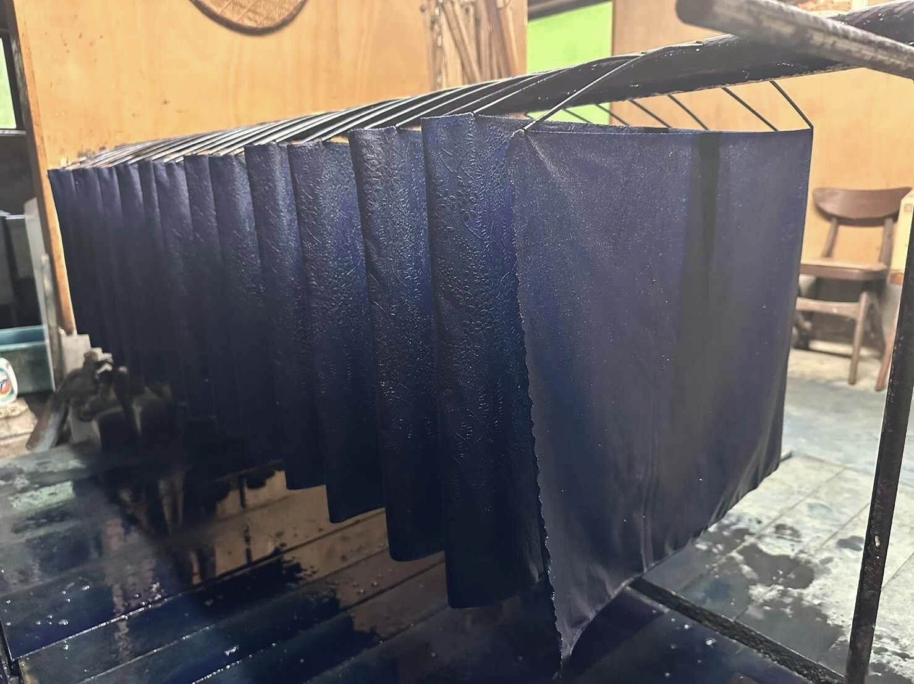

The color the world calls Japan Blue世界が「ジャパン・ブルー」と
呼んだ色

Four generations,
twelve living vats.
四代、百三十年。
十二の甕が生きている。
When foreign visitors first arrived in Meiji-era Japan, they were struck by a single color: the deep, living blue worn by farmers and merchants alike. They named it Japan Blue — before Mt. Fuji, before the cherry blossoms, this was Japan's first impression on the world.
Our atelier has fermented natural sukumo indigo beside the Yoshino River since 1892. The name Kameboshi — "the star in the vat" — comes from a story our founder told: that on clear nights, a star settles on the surface of the dye and sleeps at the bottom of the vat, lending the cloth its depth.
Each of our twelve vats is alive — a fermentation tended by hand, morning and night, every day of the year. No two days, and no two blues, are ever the same.
明治のはじめ、日本を訪れた外国人たちは、農夫も商人も身にまとうその深い青に目を奪われ、「ジャパン・ブルー」と呼びました。富士より先に、桜より先に、藍の青こそが世界の見た最初の日本でした。
甕星は明治二十五年より、吉野川のほとりで天然灰汁発酵建てによる藍染を続けてきた工房です。屋号の由来は、初代が残したひとつの言い伝え——「晴れた夜、藍甕の水面に星がおりてきて、甕の底で眠る。だからうちの藍は深い」。
十二本の藍甕は、いまも毎朝毎晩、手でかき混ぜて守る「生きた発酵」。同じ日はふたつとなく、同じ青もふたつとありません。